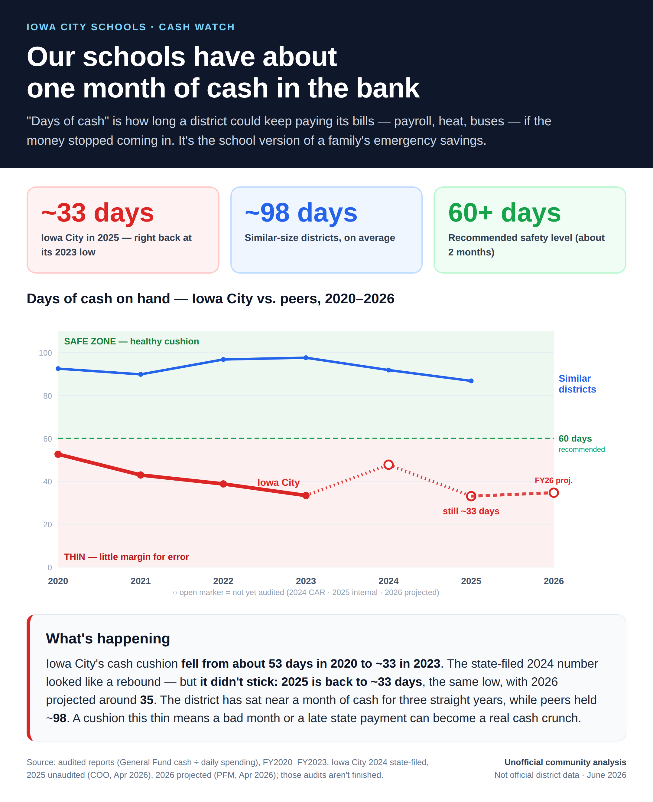

Three ways to measure the district's safety margin — spending room, reserves, and days of cash — vs. size-matched peers · June 2026
The question: does Iowa City CSD keep a financial safety margin — and is it shrinking? A district can run short of cushion in three different ways, so we check all three. All three point the same direction: Iowa City keeps the thinnest cushion of any large Iowa district, and the gap to its peers has widened over time.
In each chart, every line is a district. Iowa City is red, the dashed blue line is the peer average, and the faint gray lines are the other large districts (5,000+ students).
What it is: Iowa caps how much a district may spend each year. This shows the unused "room" left over (its Unspent Authorized Budget) as a share of its budget. It's the single most-watched measure of an Iowa district's financial health, and it exists for every district every year — even years where the audit is late — so it gives the full nine-year trend.
Why it matters: when it hits zero or goes negative, the district has overspent its legal authority — which is unlawful and forces a state-supervised recovery plan.
Iowa City started already thin (6.6% in 2017, about half the peer average of 13.3%) and kept drawing it down — touching 0.1% in 2022 and going negative (−1.2%) in 2023, the level that triggers state review. Over the same nine years the peer average rose, from 13.3% to 15.9%. By 2025 Iowa City's cushion (2.3%) was roughly a seventh of the peer average.
What it is: the actual rainy-day cushion — the district's general-fund reserves measured against one year of revenue (the "solvency ratio"), straight from the audited financial reports. In Iowa, 5–15% is considered healthy. It only exists for years a district has finished its audit — which is why Iowa City's line stops at 2023.
Why it matters: reserves are what absorb a bad budget year, a late state payment, or an emergency repair. A thin cushion means little margin for error.
Same story: Iowa City sat at 4.2% in 2020 and slipped to 2.5% by 2023 — the thinnest of any large district that has filed, below both the 5–15% healthy range and the peer average (~18% in 2023). The line stops there for a reason: Iowa City's 2024 and 2025 audits still aren't filed, so the most recent verified reserve position is three years old.
What it is: the district's General Fund cash & investments divided by its average daily spending — "if the money stopped coming in, how many days could the lights stay on?" Unlike the first two, this is actual cash. GFOA recommends keeping at least ~60 days.
Why it matters: it's the cash behind the district's tax-anticipation-warrant and interfund-loan discussions — the most concrete sign of how tight things are.
Iowa City has run below the ~60-day guideline every year, falling from ~53 days in 2020 to ~33 in 2023 — the thinnest of any large district, vs. a peer average near 98. The state-filed FY2024 figure looked like a rebound (~48), but it didn't stick: the unaudited FY2025 number is back to ~33 days — the same as the 2023 low, and FY2026 is projected at just ~35. Peers, meanwhile, held ~87 days.
⚠ Read the FY2024 bounce with caution — it isn't audited. FY2024 is the district's own unaudited report (hollow marker), filed while the same inter-fund reconciliation problems that forced major revisions to the FY2023 audit were still unresolved. If the FY2024 audit reassigns cash now parked in the General Fund to the funds it belongs to, days-cash falls back toward the trough. Treat the open markers (FY2024 self-reported, FY2025 internal, FY2026 projected) as estimates, not audited actuals.
Want more on the cash measure? See the district's own Day's Net Cash Ratio (its internal KPI, computed across all peers back to 2015 against a 90–120 day target), plus the deep-dive reserves trend and operating-cash pages under Other analyses.
{kind=link}